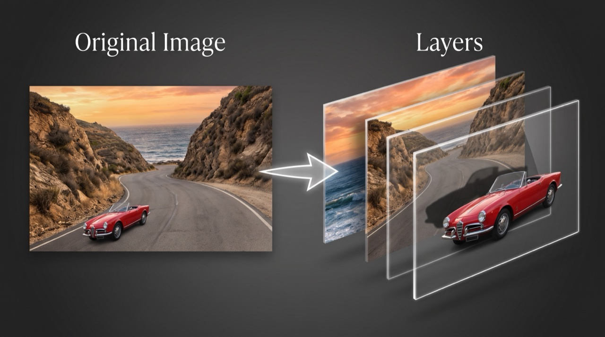
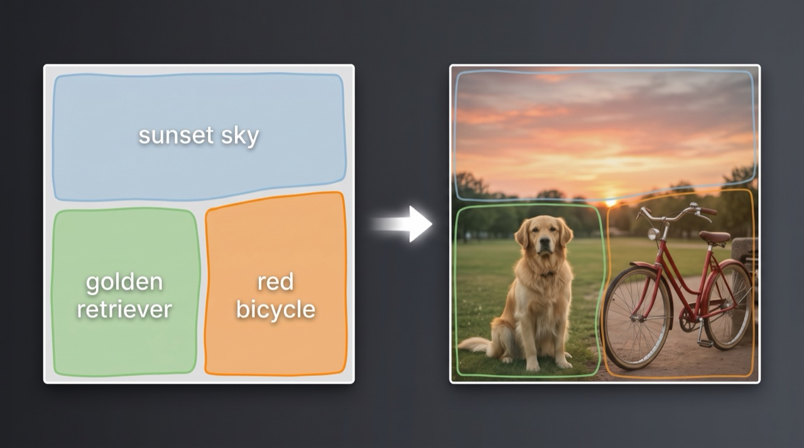
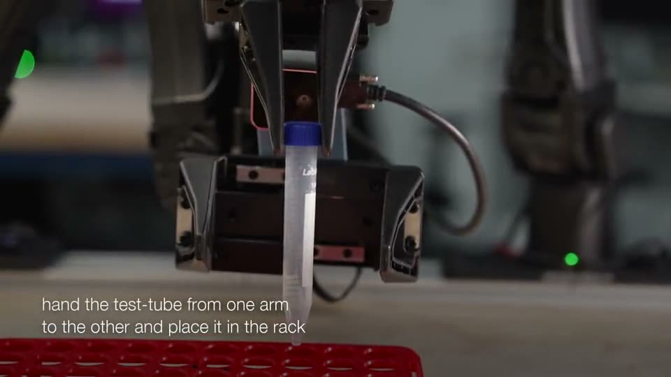
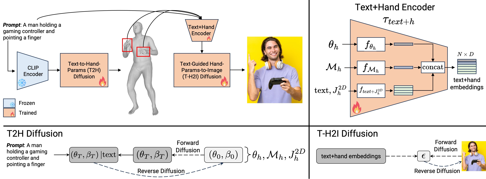
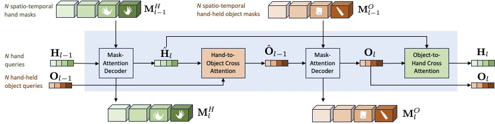
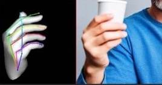
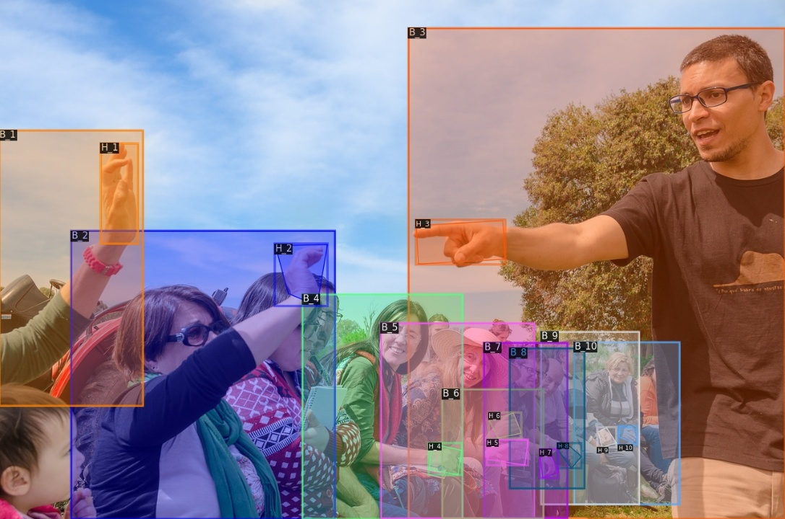
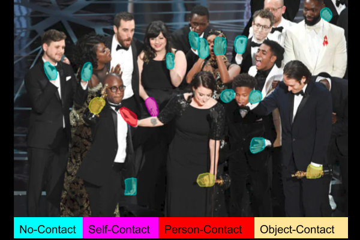
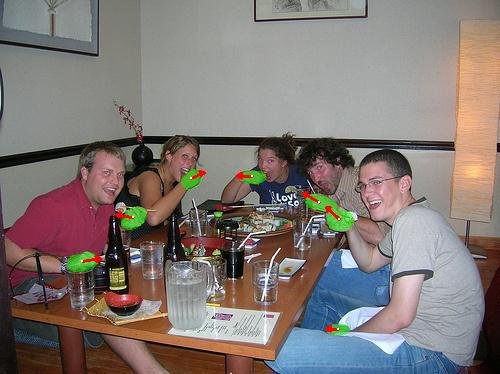
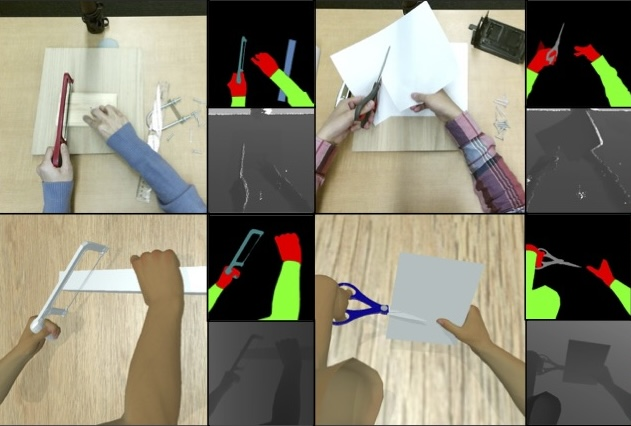

Supreeth Narasimhaswamy
Research Scientist, Luma AI · Physical AI & Robotics · Image & Video Generation
I am a Research Scientist at Luma AI, building multimodal foundation models for Physical AI and Robotics. Previously, I was a Research Scientist at Adobe, where I worked on image and video generation and editing for Adobe Firefly.
I received my PhD from CVLab at Stony Brook University, advised by Prof. Minh Hoai, where I built vision models and datasets to understand how human hands contact, interact with, and grasp objects.

News
- Oct 2026We released ZAP, a robot agent policy trained entirely in simulation.
- May 2026I joined Luma AI as a Research Scientist.
- Feb 2024Our work on generating plausible hands in diffusion-based text-to-image models is accepted to CVPR 2024.
- Feb 2024Our work on segmenting and tracking hand-held objects is accepted to CVPR 2024.
- Feb 2024I joined Adobe Firefly as a full-time Research Scientist.
- Feb 2024I successfully defended my PhD. This has been a fantastic journey!
- Dec 2023I completed a research internship at Adobe Research.
- Sep 2023Our preliminary work on diffusion-based hand generation is accepted at ICCV 2023 Hands Workshop.
- Oct 2022I talked about our work on hand analysis at Adobe Research. Thanks Yi Zhou and Yang Zhou for hosting.
- Sep 2022I completed a research internship at Snap Research, NYC.
- Jul 2022I gave a talk about our work on hand analysis at the Max Planck Institute for Intelligent Systems. Thanks Sai Dwivedi, Dimitrios Tzionas, and Michael Black for hosting.
- Mar 2022Two papers at CVPR 2022: our work on hand-body association and hand tracking.
- Aug 2021I completed a research internship at Microsoft.
- Sep 2020Our work on joint hand detection and contact recognition is accepted to NeurIPS 2020.
- Jul 2019Our work on detecting hands in unconstrained environments is accepted to ICCV 2019.
- Jul 2019Our work on hand interactions in manual assembly settings is accepted to BMVC 2019.
- Aug 2018I started my graduate studies at the Department of Computer Science, Stony Brook University.
Selected Work
Zero-real Agent Policy (ZAP)
A 27B open model trained only in simulation that beats state-of-the-art VLAs and matches GPT-6 Astra on a real bimanual robot, while being 3× faster and 17× cheaper per task, with zero real-world training data.
A 27B open model trained only in simulation that beats state-of-the-art VLAs and matches GPT-6 Astra on a real bimanual robot, while being 3× faster and 17× cheaper per task, with zero real-world training data.
Adobe Firefly Image 4
Adobe's foundation text-to-image generation model, trained on a commercially safe dataset.
Adobe's foundation text-to-image generation model, trained on a commercially safe dataset.

Layered Image Editing and Decomposition
Decomposing images into editable layers for generative editing. Users specify which objects to separate into layers, enabling precise, localized control over each object's attributes, size, and orientation.
Decomposing images into editable layers for generative editing. Users specify which objects to separate into layers, enabling precise, localized control over each object's attributes, size, and orientation.

Region Prompting in Adobe Firefly
Prompting different regions of an image independently in Firefly, enabling control over the size and orientation of objects. Presented at Adobe MAX 2024.
Prompting different regions of an image independently in Firefly, enabling control over the size and orientation of objects. Presented at Adobe MAX 2024.
Grasping Virtual Objects with Real Hands for Extended Reality
Enabling users to grasp and interact with virtual objects in extended reality using their own hands, just as they would with real objects.
Enabling users to grasp and interact with virtual objects in extended reality using their own hands, just as they would with real objects.
Publications

Pretraining Knows What, Simulation Teaches How: Compositional Generalization in a Sim-Trained Robot Agent
arXiv preprint arXiv:2610.35817, 2026
Project Page / Paper /
arXiv preprint arXiv:2610.35817, 2026
Project Page / Paper /
@InProceedings{pikus2026zap,
author = {Benjamin Pikus and Daniel Saunders and Mircea Mironenco and Salman Mohammadi and Mathew Mathew and Sirou Zhu and Divya Makkar and Xuhua Huang and Qinbo Li and Supreeth Narasimhaswamy and Siyuan Cen and Dejia Xu and Shyamal Buch and Thomas Neff},
title = {Pretraining Knows What, Simulation Teaches How: Compositional Generalization in a Sim-Trained Robot Agent},
booktitle = {arXiv preprint arXiv:2610.35817},
year = {2026},
}
HanDiffuser: Text-to-Image Generation With Realistic Hand Appearances
Supreeth Narasimhaswamy, Uttaran Bhattacharya, Xiang Chen, Ishita Dasgupta, Saayan Mitra, Minh Hoai
IEEE/CVF Conference on Computer Vision and Pattern Recognition (CVPR), 2024
Project Page / Paper /
Supreeth Narasimhaswamy, Uttaran Bhattacharya, Xiang Chen, Ishita Dasgupta, Saayan Mitra, Minh Hoai
IEEE/CVF Conference on Computer Vision and Pattern Recognition (CVPR), 2024
Project Page / Paper /
@InProceedings{sn_handiffuser_cvpr_2024,
author = {Supreeth Narasimhaswamy and Uttaran Bhattacharya and Xiang Chen and Ishita Dasgupta and Saayan Mitra and Minh Hoai},
title = {HanDiffuser: Text-to-Image Generation With Realistic Hand Appearances},
booktitle = {IEEE/CVF Conference on Computer Vision and Pattern Recognition (CVPR)},
year = {2024},
}
HOIST-Former: Hand-held Objects Identification, Segmentation, and Tracking in the Wild
Supreeth Narasimhaswamy, Huy Nguyen, Lihan Huang, Minh Hoai
IEEE/CVF Conference on Computer Vision and Pattern Recognition (CVPR), 2024
Project Page / Paper /
Supreeth Narasimhaswamy, Huy Nguyen, Lihan Huang, Minh Hoai
IEEE/CVF Conference on Computer Vision and Pattern Recognition (CVPR), 2024
Project Page / Paper /
@InProceedings{sn_hoist_cvpr_2024,
author = {Supreeth Narasimhaswamy and Huy Nguyen and Lihan Huang and Minh Hoai},
title = {HOIST-Former: Hand-held Objects Identification, Segmentation, and Tracking in the Wild},
booktitle = {IEEE/CVF Conference on Computer Vision and Pattern Recognition (CVPR)},
year = {2024},
}
Text-to-Hand-Image Generation Using Pose- and Mesh-Guided Diffusion
Supreeth Narasimhaswamy, Uttaran Bhattacharya, Xiang Chen, Ishita Dasgupta, Saayan Mitra
IEEE/CVF International Conference on Computer Vision (ICCV), International Workshop on Observing and Understanding Hands in Action, 2023
Project Page / Paper /
Supreeth Narasimhaswamy, Uttaran Bhattacharya, Xiang Chen, Ishita Dasgupta, Saayan Mitra
IEEE/CVF International Conference on Computer Vision (ICCV), International Workshop on Observing and Understanding Hands in Action, 2023
Project Page / Paper /
@InProceedings{sn_handdiffusion_iccv_2023,
author = {Supreeth Narasimhaswamy and Uttaran Bhattacharya and Xiang Chen and Ishita Dasgupta and Saayan Mitra},
title = {Text-to-Hand-Image Generation Using Pose- and Mesh-Guided Diffusion},
booktitle = {IEEE/CVF International Conference on Computer Vision (ICCV), International Workshop on Observing and Understanding Hands in Action},
year = {2023},
}
Whose Hands Are These? Hand Detection and Hand-Body Association in the Wild
Supreeth Narasimhaswamy, Thanh Nguyen, Mingzhen Huang, Minh Hoai
IEEE/CVF Conference on Computer Vision and Pattern Recognition (CVPR), 2022
Project Page / Paper / Code /
Supreeth Narasimhaswamy, Thanh Nguyen, Mingzhen Huang, Minh Hoai
IEEE/CVF Conference on Computer Vision and Pattern Recognition (CVPR), 2022
Project Page / Paper / Code /
@InProceedings{sn_bodyhands_cvpr_2022,
author = {Supreeth Narasimhaswamy and Thanh Nguyen and Mingzhen Huang and Minh Hoai},
title = {Whose Hands Are These? Hand Detection and Hand-Body Association in the Wild},
booktitle = {IEEE/CVF Conference on Computer Vision and Pattern Recognition (CVPR)},
year = {2022},
}
Forward Propagation, Backward Regression and Pose Association for Hand Tracking
Mingzhen Huang, Supreeth Narasimhaswamy, Saif Vazir, Haibin Ling, Minh Hoai
IEEE/CVF Conference on Computer Vision and Pattern Recognition (CVPR), 2022
Project Page / Paper / Code /
Mingzhen Huang, Supreeth Narasimhaswamy, Saif Vazir, Haibin Ling, Minh Hoai
IEEE/CVF Conference on Computer Vision and Pattern Recognition (CVPR), 2022
Project Page / Paper / Code /
@InProceedings{sn_handler_cvpr_2022,
author = {Mingzhen Huang and Supreeth Narasimhaswamy and Saif Vazir and Haibin Ling and Minh Hoai},
title = {Forward Propagation, Backward Regression and Pose Association for Hand Tracking},
booktitle = {IEEE/CVF Conference on Computer Vision and Pattern Recognition (CVPR)},
year = {2022},
}
Detecting Hands and Recognizing Physical Contact in the Wild
Supreeth Narasimhaswamy, Trung Nguyen, Minh Hoai
Advances in Neural Information Processing Systems (NeurIPS), 2020
Project Page / Paper / Code /
Supreeth Narasimhaswamy, Trung Nguyen, Minh Hoai
Advances in Neural Information Processing Systems (NeurIPS), 2020
Project Page / Paper / Code /
@InProceedings{sn_contacthands_neurips_2020,
author = {Supreeth Narasimhaswamy and Trung Nguyen and Minh Hoai},
title = {Detecting Hands and Recognizing Physical Contact in the Wild},
booktitle = {Advances in Neural Information Processing Systems (NeurIPS)},
year = {2020},
}
Contextual Attention for Hand Detection in the Wild
Supreeth Narasimhaswamy, Zhengwei Wei, Yang Wang, Justin Zhang, Minh Hoai
IEEE/CVF International Conference on Computer Vision (ICCV), 2019
Project Page / Paper / Code /
Supreeth Narasimhaswamy, Zhengwei Wei, Yang Wang, Justin Zhang, Minh Hoai
IEEE/CVF International Conference on Computer Vision (ICCV), 2019
Project Page / Paper / Code /
@InProceedings{sn_handcnn_iccv_2019,
author = {Supreeth Narasimhaswamy and Zhengwei Wei and Yang Wang and Justin Zhang and Minh Hoai},
title = {Contextual Attention for Hand Detection in the Wild},
booktitle = {IEEE/CVF International Conference on Computer Vision (ICCV)},
year = {2019},
}
WorkingHands: A Hand-Tool Assembly Dataset for Image Segmentation and Activity Mining
Roy Shilkrot, Supreeth Narasimhaswamy, Saif Vazir, Minh Hoai
British Machine Vision Conference (BMVC), 2019
Project Page / Paper /
Roy Shilkrot, Supreeth Narasimhaswamy, Saif Vazir, Minh Hoai
British Machine Vision Conference (BMVC), 2019
Project Page / Paper /
@InProceedings{sn_workinghands_bmvc_2019,
author = {Roy Shilkrot and Supreeth Narasimhaswamy and Saif Vazir and Minh Hoai},
title = {WorkingHands: A Hand-Tool Assembly Dataset for Image Segmentation and Activity Mining},
booktitle = {British Machine Vision Conference (BMVC)},
year = {2019},
}